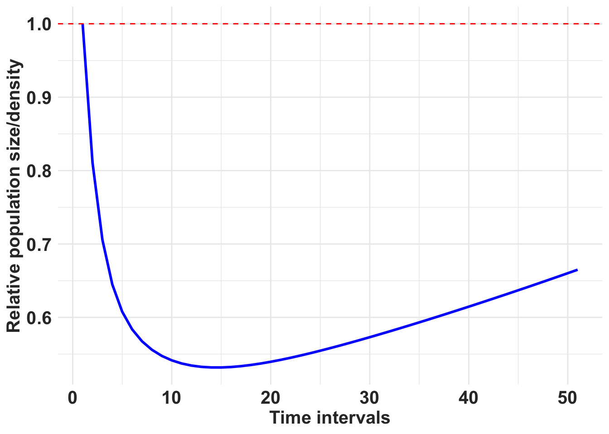
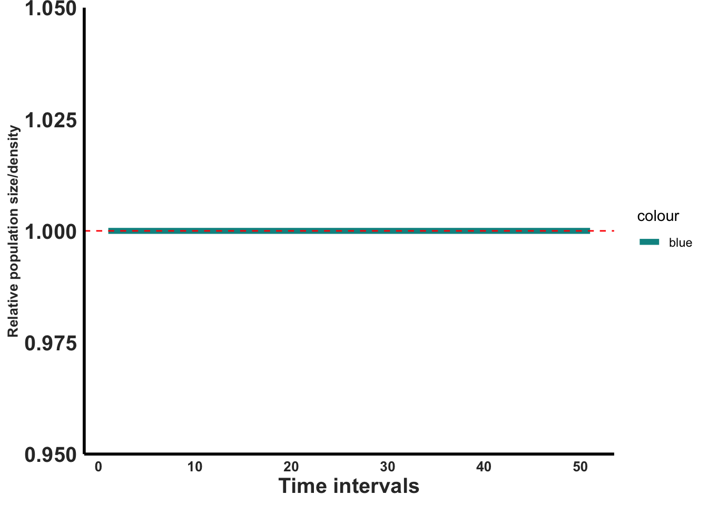
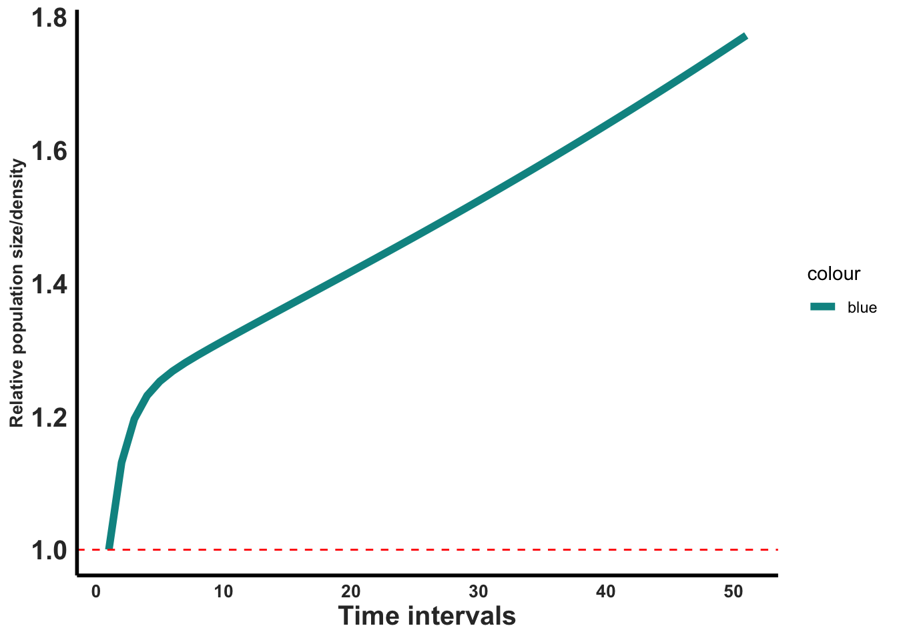
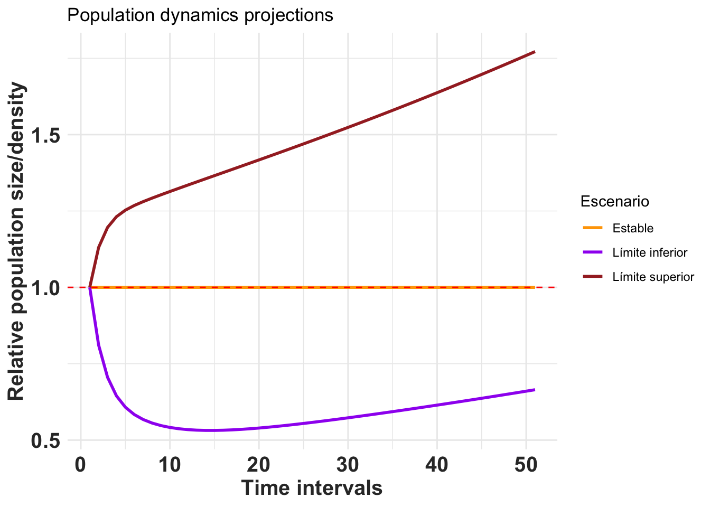
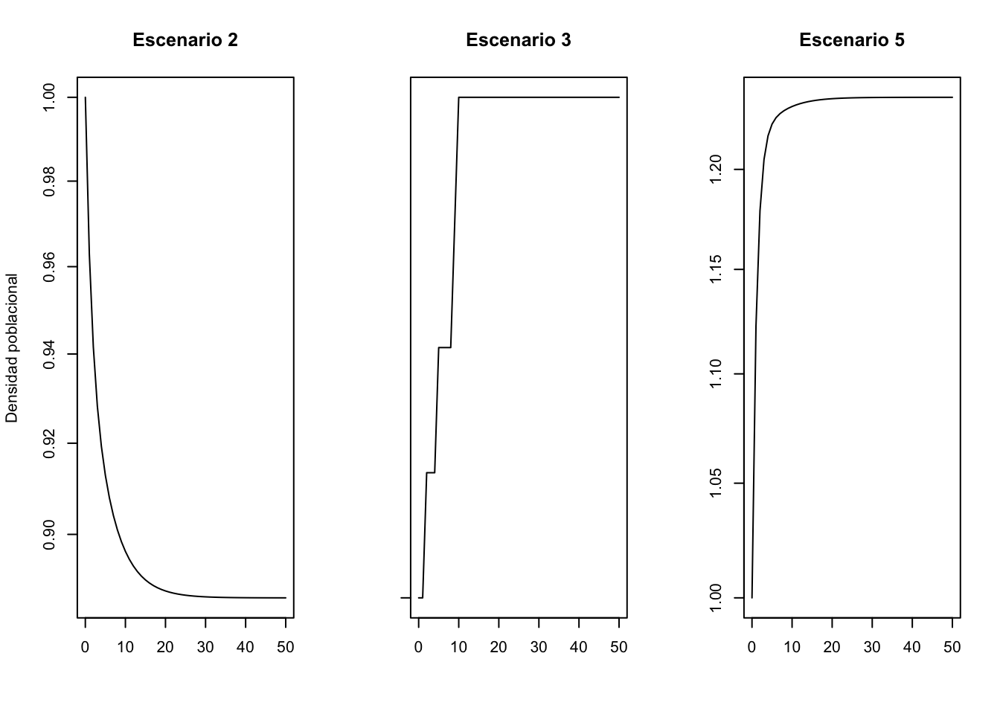
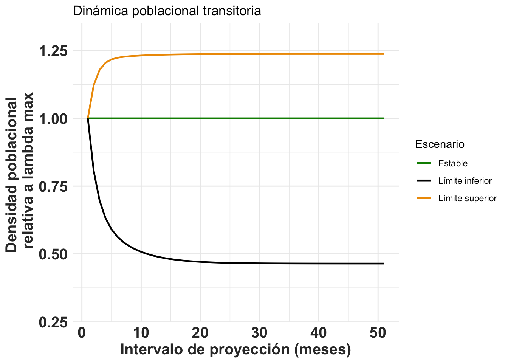
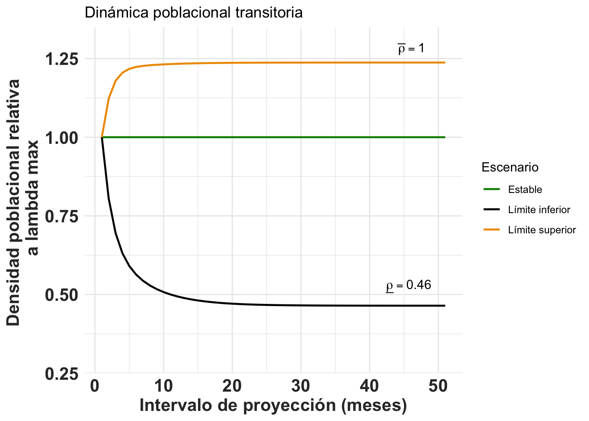

Code
## Librerías de R requeridas para el análisis
library(popdemo)
library(popbio)
library(ggplot2)
library(dplyr)
library(scales)
library(tidyverse)
library(gt)Autores: “Mariana Hernández Apolinar, Tamara Ticktin y Paola Portillo Tzompa”
## Librerías de R requeridas para el análisis
library(popdemo)
library(popbio)
library(ggplot2)
library(dplyr)
library(scales)
library(tidyverse)
library(gt)Los modelos de proyección poblacional (MPP), previamente vistos en el capítulo de Índices, son los más utilizados para proyectar el crecimiento futuro de una población (i.e. largo plazo). Los modelos más frecuentemente usados son aquellos que suponen constancia en la proporción de muertes, reproducción y crecimiento de los individuos en las distintas categorías que forman una población (i.e. tasas vitales), lo cual se debe a que las condiciones ambientales tampoco varían (Caswell, 1989; Crone et al., 2011; Koons, Iles & Stott, 2021). Con la ausencia de variación en las variables en el largo plazo (i.e. deterministas) se espera que la población incremente o decrezca a una velocidad constante, llamada tasa finita o asintótica de crecimiento poblacional, \(λ\) [Bierzychudek (1999); Caswell (1989)). Este crecimiento constante se alcanza cuando la proporción de individuos por categoría de tamaño/estado también es constante, condición conocida como estructura estable, \(w\).
En la naturaleza, las condiciones de la población y del ambiente distan de ser constantes (i.e. deterministas). Las poblaciones experimentan recursos limitados (v.g. alimento, sitios de refugio), ambientes heterogéneos y cambiantes que perturban a las poblaciones (v.g. deforestación, sequía, huracanes, enfermedades, etc.), los cuales impactan su dinámica y sugieren que la tasa de crecimiento a largo plazo (\(λ\)) no es un buen predictor de los cambios que enfrentan dichas poblaciones (Bierzychudek, 1999). De ahí que, se hayan desarrollado modelos que integran variación en las condiciones y que permiten hacer proyecciones más realistas sobre la dinámica poblacional de la especie de estudio, tal es el caso de los modelos de crecimiento estocástico (ver capítulo 10) y los análisis de dinámica transitoria.
Los modelos de dinámica transitoria surgen como una alternativa para analizar la dinámica de una población cuando se presenta un evento de perturbación repentino de origen biótico (depredación), abiótico (un huracán) o antropogénico (extracción) (Ezard et al., 2010). Un aspecto particular de estos modelos es que, el disturbio afecta únicamente a la estructura de la población y carece de efectos en las entradas de la matriz de transición. Es decir, el evento provoca cambios en la abundancia de individuos en una o varias de las categorías de tamaño/estados, no así en los elementos de la matriz de transición que se mantienen sin cambios y constantes en el tiempo (Stott, Townley & Hodgson, 2011; Vindenes et al., 2021). Este cambio repentino da lugar a una respuesta instantánea, pasajera, temporal y de corto plazo en la población, la cual generalmente tiene un comportamiento distinto al observado en la dinámica de largo plazo (Ezard et al., 2010; Stott et al., 2010; Koons, Iles & Stott, 2021).
A fin de entender cómo influye el cambio en la estructura en el crecimiento de una población, en los modelos de dinámica transitoria se asume que la estructura inicial es inestable, lo cual permite evaluar la respuesta de la población antes de alcanzar el crecimiento asintótico (i. e. \(λ\) constante y estructura estable) Stott, Townley & Hodgson (2011). Dicha respuesta se determina a través de las discrepancias o diferencias que se generan al comparar el comportamiento de la población, usando una o varias estructuras iniciales (i.e. corto plazo) respecto de la estructura estable (i.e. largo plazo) (Raventós et al., 2015). La respuesta se refleja en incrementos (ampliación), decrementos (atenuación) o fluctuaciones en la abundancia de la población en el corto plazo respecto a las observadas en el largo plazo (Stott, Townley & Hodgson, 2011), cambios que son cuantificados a través de los Índices de transferencia (Stott, Townley & Hodgson, 2011).
Actualmente, los modelos de dinámica transitoria o de corto plazo han resultado ser una herramienta de gran utilidad en los estudios poblacionales de orquídeas, debido a que éstos permiten poner a prueba estrategias de conservación y manejo para estas plantas (Raventós et al., 2015; Tremblay, Raventos & Ackerman, 2015; Ospina-Calderón et al., 2023). Si bien estos análisis han existido durante muchos años (Crone et al., 2011), fue a partir de la década de 2010 que fueron de fácil acceso (Stott, Hodgson & Townley, 2012b).
El análisis de la dinámica transitoria es muy complejo y fue planteado por Stott y colaboradores (Stott, Townley & Hodgson, 2011; Stott, Hodgson & Townley, 2012b; Stott, Hodgson & Townley, 2012a). Este incluye una serie de procedimientos matemáticos que permiten calcular y analizar la dinámica transitoria en el Programa de estadística R. A fin de facilitar un proyecto de análisis de este tipo, a continuación se resumen la serie de procedimientos que deberán llevarse a cabo para entender cómo un cambio repentino en la estructura de la población puede afectar la dinámica de una población.
A manera de nota, cabe señalar, por otra parte, que los modelos de dinámica transitoria se consideran como la única forma de evaluar la dinámica poblacional de especies o poblaciones que nunca convergen (o poco probable que converjan) a una estructura estable (Hinrichsen, 2025).
Como punto de partida y con la finalidad de contrastar su comportamiento con el de corto plazo, se describe el crecimiento de la población a largo plazo: tasas vitales constantes y en condiciones ambientales sin variación.

El ciclo de vida de L. rubripetala fue dividido en cuatro categorías de estado: plántula (PL), juvenil (J), adulto no reproductivo (NR) y adulto reproductivo (AR). Esta última categoría florece y produce frutos a largo de todo el año (Schödelbauerová, Tremblay & Kindlmann, 2010; Tremblay, Raventos & Ackerman, 2015). En consecuencia, la estructura poblacional cuenta con una columna de 4 elementos, que indican el número de individuos encontrado en el estado de plántula (0), juvenil (46), adulto no reproductivo (38) y adulto reproductivo (82) al inicio del estudio, indicado como \(t_{0}\) (Schödelbauerová, Tremblay & Kindlmann, 2010). Por su parte, la matriz de transición de L. rubripetala está formada por 4 renglones y 4 columnas (Tremblay, Raventos & Ackerman, 2015), que corresponden a los estados del ciclo de vida de la especie y los 16 elementos de la probabilidad de permanencia, transición a una categoría superior, retroceso a una categoría inferior y fecundidad promedio por categoría (ver capítulo 5).
En el siguiente recuadro incorporamos la información de L. rubripetala en R. La función matrix fue usada para construir la matriz de transición y n0 se usa para nombrar al vector de la estructura inicial observada.
#Capturar los datos de la matriz para L. rubripetala (Tremblay et al. 2015)
Lr1 <- matrix(c(0.4324, 0, 0, 0.15,
0.3784, 0.8459, 0, 0,
0, 0.0034, 0.7954,0.2300,
0, 0.0890, 0.1841,0.7510),
byrow=TRUE,ncol=4)
#Capturar las categorias de estado
estadios <- c("PL", "J", "NR", "AR")
colnames(Lr1) <- rownames(Lr1) <- estadios
#Obtener la matriz L. rubripetala
Lr1 <- matrix(Lr1[1:4, ], nrow = 4, dimnames = list(estadios, estadios))
Lr1 PL J NR AR
PL 0.4324 0.0000 0.0000 0.150
J 0.3784 0.8459 0.0000 0.000
NR 0.0000 0.0034 0.7954 0.230
AR 0.0000 0.0890 0.1841 0.751[1] 0 46 38 82El crecimiento de la población de tipo asintótico, \(λ\) (de ahora en adelante \(λ_{max}\)), se alcanza en el largo plazo si se mantentienen las condiciones constantes de la población y se evidencia cuando se mantiene constante o estable la proporción de individuos en la estructura poblacional.
En el siguiente recuadro se calcula \(λ_{max}\) para la población 1 de L. rubripetala. El resultado indica que la tasa de crecimiento poblacional es de 1.007. Esto implica que si existieran 1000 individuos en la población, a esta tasa la población aumentaría en siete individuos del primer mes (\(t_{0}\)) al siguiente (\(t_{1}\)). Este ejemplo sólo permite ilustrar el concepto, ya que las poblaciones de Lepanthes nunca serán tan grandes en la naturaleza (Tremblay, 1997).
#Análisis asintótico (i.e. largo plazo) del crecimiento poblacional de L. rubripetala
#La orquídea florece y produice frutos todo el año, por lo que el seguimiento de la población fue mensual.
#PARÁMETROS POBLACIONALES
##lambda: Tasa de crecimiento poblacional
lambda <- lambda(Lr1)
lambda[1] 1.007206El cálculo y análisis de la dinámica transitoria es menos directo en comparación con la de largo plazo o asintótica (Stott, 2012). Esto es, para distinguir los efectos transitorios de los asintóticos, en la dinámica de corto plazo se plantean los siguientes análisis: la dinámica poblacional absoluta, la dinámica transitoria estandarizada y el cálculo de los límites transitorios. Debido a que la dinámica transitoria depende de las condiciones iniciales de la estructura (Raventós et al., 2015), en la solución de estos tres análisis se requiere definir el vector inicial para la población de estudio (Stott, 2012).
Las fluctuaciones aleatorias en la estructura debidas a una perturbación de origen biótico, abiótico o antropogénico son incorporadas por Stott y colaboradores como estocasticidad demográfica (Stott et al., 2010; Stott, Townley & Hodgson, 2011). Este tipo de estocasticidad se refiere a la sobrevivencia y reproducción en número entero y finito; es decir, un individuo sobrevive o no, lo cual se representa con 1 o 0, al igual que puede reproducirse (1) o no (0). La incorporación de esta característica en los individuos genera una variación no cíclica ni predecible en la respuesta de los individuos de una población y pueden tener un impacto considerable en el tamaño de la población (Stott, 2012).
Por ejemplo, la estructura inicial en la población 1 de L. rubripetala fue la siguiente: (0,46,38,82). En este caso, al modificar la proporción de individuos presente en una, dos o en todas las categorías de la población se simuló el cambio en la dinámica en el corto plazo; es decir, en un momento previo a que se alcance el crecimiento estable o de largo plazo. En L. rubripetala se hicieron cinco simulaciones o escenarios al suponer las siguientes proporciones de individuos por categoría (Tremblay, Raventos & Ackerman, 2015):
Como consecuencia de las perturbaciones o escenarios existen cambios en el crecimiento poblacional, cuyas medidas absolutas de densidad describen qué tan grande o pequeña puede llegar a ser una población en el corto plazo (Stott, Townley & Hodgson, 2011). Un aspecto importante a considerar es que, estas medidas absolutas describen la influencia combinada de las tasas de crecimiento transitorio y la dinámica asintótica, cuyo comportamiento se conoce como dinámica poblacional absoluta y se visualiza para L. rubripetala a través de la figura 2A de Tremblay y colaboradores (Tremblay, Raventos & Ackerman, 2015).
En los siguientes recuadros se proyecta la dinámica poblacional absoluta de L. rubripetala ante cambios en la estructura inicial (i-v). Se estiman y grafican uno a uno los resultados de los escenarios: 1, 3 y 5, por lo que se sugiere desarrollar los incisos restantes, a fin de poner a prueba los conocimientos adquiridos.
Límite inferior (1,0,0,0), todos los individuos de la población se encuentran en la categoría de plántulas (Lower bound). Esto representa, por ejemplo, una población que se esta estableciendo, ya que todos los individuos son plántulas y no hay individuos en las otras categorías.
En este caso, se observa que la población decrece rápidamente y se estabiliza en un valor cercano a 0.6, lo que indica que el tamaño relativo poblacional es menor que el tamaño poblacional del crecimiento asintótico (1.007) aún después de proyectar su crecimiento a un intervalo de 50 meses. A partir de lo anterior, se sugiere que la población no se recupera y que la estructura de la población no es favorable para el crecimiento poblacional de L. rubripetala.
# DINÁMICA POBLACIONAL ABSOLUTA.
#Definir los margenes
par(mfrow = c(1, 1))
par(mar = c(3, 3, 3, 3))
#Vector original
nLr0 <- c(0, 46, 38, 82)
#Escenario 1. Límite inferior # Límite inferior (1,0,0,0)
nLr1 <- c(166, 0, 0, 0)
#Proporción de individuos por categoría
nLr1 <- nLr1 / sum(nLr1)
# nLr1
#Gráfica de barras del escenario 1
#barplot(nLr1, names.arg = 1:4)
#title(main = "Escenario 1", xlab = "Categoría", ylab = "Proporción")
#Proyección de la dinámica escenario 1
pr1 <- project(Lr1, vector = nLr1, time = 50)
pr1df <- as.data.frame(pr1)
pr1df$time <- seq(1, nrow(pr1df), 1)
ggplot(pr1df, aes(time, pr1)) +
geom_line(aes(color = "blue"), size = 2) +
geom_hline(yintercept = 1, linetype = "dashed", color = "red") +
xlab("Time intervals") +
ylab("Relative population size/density") +
theme_minimal() +
rlt_style_colour()+
theme(legend.position = "none")
#plot(pr1, log = "y", ylim = c(0.1, 1.6), ann = FALSE)
#title(main = "Proyección de la dinámica (Escenario 1)", xlab = "Time intervals", ylab = "Population size/density")En este escenario, se supone que la población tiene una mayor proporción de individuos en las categorías juvenil y adulto no reproductivo (0.15, 0.35, 0.30, 0.20). En este caso, la población decrece rápidamente en los primeros periodos pero y despues de unos 5 periodos de tiempo la poblacion comienza a crecer y tiene un tamaño población relativo al comienzo despues de ±16 periodos de tiempo. Esto indica que la población se recupera rápidamente y alcanza un tamaño poblacional estable en un periodo relativamente corto.
Como la población tiene una estructura estable, la población no tiene un crecimiento diferente a 1, por lo que alcanza un tamaño poblacional estable en un periodo relativamente corto o inmediato. Debido que la población tiene una estructura estable, el tamaño relativo de la población es constante.
#Escenario 3. Estructura estable
# Estructura estable de estados
Wmax <- stable.stage(Lr1)
nLr3 <- Wmax
#Gráfica de barras del escenario 3
#barplot(nLr3, names.arg = 1:4)
#title( main = "Escenario 3", xlab = "Categoría", ylab = "Proporción")
#Proyección de la dinámica escenario 3
Lr1st <- (Lr1 / lambda)
#Lr1st
#eigen(Lr1st)
pr3 <- project(Lr1st, vector = Wmax, time = 50)
pr3df <- as.data.frame(pr3)
pr3df$time <- seq(1, nrow(pr3df), 1)
ggplot(pr3df, aes(time, pr3)) +
geom_line(aes(color = "blue"), size = 2) +
geom_hline(yintercept = 1, linetype = "dashed", color = "red") +
xlab("Time intervals") +
ylab("Relative population size/density") +
theme_minimal() +
rlt_style_colour()
## Código para el plot usando el método tradicional
#plot(pr3, log = "y", ylim = c(0.1, 1.6), ann = FALSE)
#title(main = "Proyección de la dinámica (Escenario 3)", xlab = "Time intervals", ylab = "Population size/density")En este escenario, se supone que la población tiene una mayor proporción de plántulas y una proporción similar en las categorías juvenil, adulto no reproductivo y adulto reproductivo (0.4, 0.2, 0.2, 0.2). En este caso, la población decrece rápidamente en los primeros periodos pero y después de unos ±7 periodos de tiempo la población comienza a crecer y tiene un tamaño población relativo al comienzo después de ±36 periodos de tiempo. Esto indica que la población se recupera rápidamente y alcanza un tamaño poblacional estable en un periodo relativamente corto, si la población comienza con esta estructura demográfica.
# DINÁMICA POBLACIONAL ABSOLUTA.
nLr4 <- c(66, 33, 33, 33)
nLr4 <- nLr4 / sum(nLr4)
pr4 <- project(Lr1, vector = nLr4, time = 50)
pr4df <- as.data.frame(pr4)
pr4df$time <- seq(1, nrow(pr4df), 1)En este escenario, se supone que la población tiene una mayor proporción de individuos en la categoría de adulto reproductivo (0,0,0,1). En el escenario 5, la población crece rápidamente en los primeros periodos, sufriendo una reducción después de ±5 meses; no obstante, se reconoce que la población aumenta rápidamente.
#Escenario 5. Límite superior
nLr5 <- c(0, 0, 0, 166)
#Proporción de individuos por categoría
nLr5 <- nLr5 / sum(nLr5)
#nLr5
#Gráfica de barras del escenario 5
#barplot(nLr5, names.arg = 1:4)
#title( main = "Escenario 5", xlab = "Categoría", ylab = "Proporción")
#Proyección de la dinámica escenario 5
pr5 <- project(Lr1, vector = nLr5, time = 50)
pr5df <- as.data.frame(pr5)
pr5df$time <- seq(1, nrow(pr5df), 1)
ggplot(pr5df, aes(time, pr5)) +
geom_line(aes(color = "blue"), size = 2) +
geom_hline(yintercept = 1, linetype = "dashed", color = "red") +
xlab("Time intervals") +
ylab("Relative population size/density") +
theme_minimal() +
rlt_style_colour()
#plot(pr5, log = "y", ylim = c(0.1, 1.6), ann = FALSE)
#title(main = "Proyección de la dinámica (Escenario 5)", xlab = "Time intervals", ylab = "Population size/density")En el siguiente recuadro se integran en una sola gráfica los resultados de la dinámica absoluta de L. rubripetala para los escenarios 1, 3 y 5.
`
ggplot(Population_density, aes(time, Pop, color = Escenario)) +
geom_line(size = 1) +
geom_hline(yintercept = 1, linetype = "dashed", color = "red") +
labs(
title = "Population dynamics projections",
x = "Time intervals",
y = "Relative population size/density"
) +
theme_minimal() +
rlt_style_colour()
La dinámica poblacional transitoria estandarizada proyecta de forma cuantitativa los cambios en la población a corto plazo para los escenarios planteados. Con este fin, primero se elimina el efecto de largo plazo de la tasa de crecimiento poblacional y de la estructura inicial de la población, lo cual permite mantener otras propiedades asintóticas, por ejemplo, la estructura estable de estados/edades y las elasticidades (Koons, Iles & Stott, 2021). En este proceso se dividen todos los elementos de la matriz sobre el valor de la lambda asintótica (\(λ_{max}\)) obtenida por la iteración de la matriz y se escala a 1 el vector de la estructura poblacional (Koons, Iles & Stott, 2021). Como resultado de este proceso, y para cualquier matriz y vector estandarizados, tendremos una \(λ_{max}\) igual a la unidad y la suma de 1 en el segundo caso, lo cual facilita y hace equitativa la comparación entre los modelos de los distintos escenarios (Stott, Townley & Hodgson, 2011; Stott, Hodgson & Townley, 2012b; Stott, Hodgson & Townley, 2012a; Koons, Iles & Stott, 2021).
En el árticulo de Tremblay y colaboradores (Tremblay, Raventos & Ackerman, 2015), la dinámica transitoria para L. reubripetala corresponde a la figura 2B. Esta figura se construye con base en la matriz y vectores estandarizados de los cinco escenarios definidos y se proyecta el crecimiento de la población a 50 meses (4.1 años). Las gráficas de la dinámica transitoria para estos escenarios se generan usando las siguientes funciones de R: standard.A=T en la estandarización de la matriz y standard.vec=T para el vector, project para la estimar la tendencia del crecimiento poblacional (Stott, Townley & Hodgson, 2011; Stott, Hodgson & Townley, 2012b; Stott, Hodgson & Townley, 2012a) y ggplot (Programa de R) para agrupar en una sola gráfica la tendencia del crecimiento poblacional de los escenarios.
En el siguiente recuadro se estima el crecimiento poblacional de L. rubripetala sin efecto de la dinámica asintótica para tres escenarios: 1, 3 y 5. En el cálculo de la dinámica de corto plazo se proyecta se usa la matriz de transición de la población 1 de L. reubripetala y el correspondiente vector inicial de la población.
## PROYECCIÓN DE LA DINÁMICA DE CORTO PLAZO.
#Vector de estructura inicial: abundancia por categoría de acuerdo con el estado
n0 <- c(166, 0, 0, 0)
#Escenario 1: Límite inferior
pr2.1 <- project(
Lr1,
vector = nLr1,
time = 50,
standard.A = T,
standard.vec = T
)
#Escenario 3. Estructura estable
pr2.3 <- project(
Lr1,
vector = nLr3,
time = 50,
standard.A = T,
standard.vec = T
)
#Escenario 5. Límite superior
pr2.5 <- project(
Lr1,
vector = nLr5,
time = 50,
standard.A = T,
standard.vec = T
)La proyección de la dinámica transitoria para los tres escenarios definidos (1, 3, y 5) tiene un comportamiento contrastante, lo cual es evidente en la gráfica del siguiente recuadro. El crecimiento es constante (i.e. lambda =1) cuando se considera la estructura estable de estados. Cuando la estructura poblacional corresponde al Inicio I se determina un decremento en la población en los primeros 5 meses, el cual se mantiene en el tiempo a lo largo de la proyección. Si la población está representada por adultos reproductivos, ésta crece en los primeros cinco meses y este crecimiento se mantiene a lo largo de los 50 meses.
# DINÁMICA POBLACIONAL TRANSITORIA ESTANDARIZADA ---------- #
# Gráfica de la Dinámica transitoria específica de la población
layout(matrix(c(1, 2, 3), ncol = 3))
#par(mfrow=c(3,1))
# Gráfica dinámica corto plazo: Inicio I
plot(
pr2.2,
log = "y",
main = "Escenario 2",
xlab = "",
ylab = "Densidad poblacional"
)
# Gráfica dinámica corto plazo: Estructura Estable
plot(pr2.3, log = "y", main = "Escenario 3", xlab = "", ylab = "")
# Gráfica dinámica corto plazo: Límite superior
plot(pr2.5, log = "y", main = "Escenario 5", xlab = "", ylab = "")
En el siguiente recuadro se integran en una sola gráfica los resultados de la dinámica poblacional transitoria estandarizada de L. rubripetala para los escenarios 1, 3 y 5.

Se determinan los límites de la dinámica transitoria con el fin de evaluar en el corto plazo los cambios cuantitativos en la población, debido a perturbaciones repentinas en la estructura poblacional. Estos se calculan en los modelos de corto plazo a través de los Índices de transferencia (Stott, Townley & Hodgson, 2011), los cuales se estiman previo a que se alcance la tasa constante de crecimiento poblacional e incluyen los siguiente tres parámetros:
i) Reactividad alta y Reactividad baja (Upper reactivity y Lower reactivity) que representan el crecimiento o el decremento inmediato (i.e. primer intervalo de tiempo).
ii) Máxima amplificación y Máxima atenuación (Maximum amplification y Maximum attenuation) que indican, respectivamente, el incremento o decremento máximo futuro del crecimiento poblacional.
iii) Inercia alta e Inercia baja (Upper inertia y Lower inertia) que evalúan el límite más alto o el más bajo en el crecimiento de la población.
#Escenario 1 (límite inferior):
lim.trans <- as.data.frame(matrix(NA, 5, 3))
names(lim.trans) <- c("reac", "maxatt", "inertia")
reac1 <- reac(Lr1, vector = nLr1)
lim.trans[1, 1] <- reac1
reac1[1] 0.8049991maxatt1 <- maxatt(Lr1, vector = nLr1, return.t = T)
maxatt1$maxatt
[1] 0.4643848
$t
[1] 49lim.trans[1, 2] <- maxatt1[1]
inertia1 <- inertia(Lr1, vector = nLr1)
inertia1[1] 0.4643642lim.trans[1, 3] <- inertia1#Escenario 3 (estructura estable):
reac3 <- reac(Lr1, vector = nLr3)
lim.trans[3, 1] <- reac3
reac3[1] 1inertia3 <- inertia(Lr1, vector = nLr3)
inertia3[1] 1lim.trans[3, 3] <- inertia3#Escenario 5. Límite superior
reac5 <- reac(Lr1, vector = nLr5)
lim.trans[5, 1] <- reac5
reac5[1] 1.122908maxamp5 <- maxamp(Lr1, vector = nLr5, return.t = T, conv.accuracy = 0.01)
maxamp5$maxamp
[1] 1.223337
$t
[1] 5lim.trans[5, 2] <- maxamp5[1]
inertia5 <- inertia(Lr1, vector = nLr5)
inertia5[1] 1.23738lim.trans[5, 3] <- inertia5#Escenario 2 (inicio I):
reac2 <- reac(Lr1, vector = nLr2)
reac2
lim.trans[2, 1] <- reac2
maxatt2 <- maxatt(Lr1, vector = nLr2, return.t = T)
maxatt2
lim.trans[2, 2] <- maxatt2[1]
inertia2 <- inertia(Lr1, vector = nLr2)
inertia2
lim.trans[2, 3] <- inertia2
#Escenario 4. Inicio II
reac4 <- reac(Lr1, vector = nLr4)
lim.trans[4, 1] <- reac4
reac4
maxatt4 <- maxatt(Lr1, vector = nLr4, return.t = T)
maxatt4
lim.trans[4, 2] <- maxatt4[1]
inertia4 <- inertia(Lr1, vector = nLr4)
inertia4
lim.trans[4, 3] <- inertia4En la tabla del siguiente recuadro se resumen los valores estimados por escenario.
gt(lim.trans)| reac | maxatt | inertia |
|---|---|---|
| 0.8049991 | 0.4643848 | 0.4643642 |
| 0.9628771 | 0.8863718 | 0.8863327 |
| 1.0000000 | NA | 1.0000000 |
| 0.9273971 | 0.7894384 | 0.7894036 |
| 1.1229083 | 1.2233368 | 1.2373800 |
En el siguiente recuadro se integran en una sola gráfica los resultados de la dinámica transitoria estandarizada de L. rubripetala para los escenarios 1, 3 y 5.
len <- nrow(pr2.1)
Population_density <- rbind(
data.frame(Projection = pr2.1, Escenario = "Límite inferior"),
data.frame(Projection = pr2.3, Escenario = "Estable"),
data.frame(Projection = pr2.5, Escenario = "Límite superior")
)
Population_density$Time <- rep(seq(1, len, 1), 3)
trans.plot <- ggplot(data = Population_density) +
theme_minimal() +
# theme(panel.border = element_blank()) +
#theme(legend.position = "none") +
geom_line(
aes(x = Time, y = Projection, group = Escenario, colour = Escenario),
linewidth = 0.8
) +
scale_colour_manual(values = c("green4", "black", "orange2")) +
labs(
title = "Dinámica poblacional transitoria",
x = "Intervalo de proyección (meses)",
y = "Densidad poblacional relativa \n a lambda max"
) +
ylim(0.3, 1.3) +
rlt_style_colour()
trans.plot +
annotate(
"text",
x = 49,
y = maxatt1$maxatt,
# 1. Change expression() to a string
# 2. Add parse = TRUE
label = "underline(rho) == 0.46",
parse = TRUE,
hjust = 1.0,
vjust = -1
) +
annotate(
"text",
x = 49,
y = maxamp5$maxamp,
# 1. Change expression() to a string
# 2. Add parse = TRUE
label = "bar(rho) == 1",
parse = TRUE,
hjust = 1.22,
vjust = -1
)
Revisión:
RLT: 2025_06_09